Stop routing docstrings to 70B models with on-device AI on Snapdragon
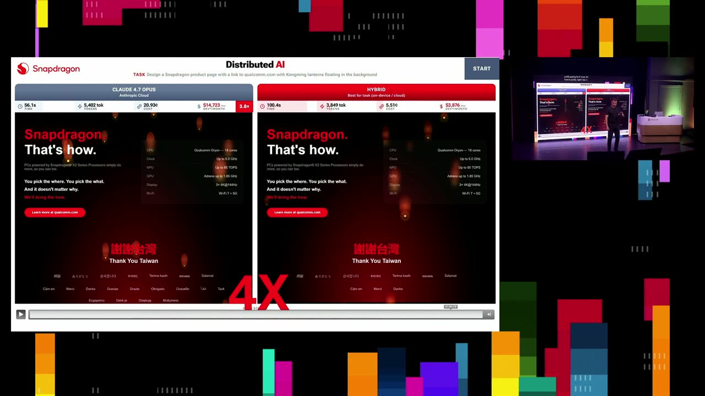
Chapters
Official description
Your AI coding assistant calls a 70B+ cloud model just to add a docstring. Snapdragon X2 Elite’s 80 TOPS NPU changes that. In this session, build a three-tier inference routing architecture—on‑device (≤13B), on‑prem (14B–34B), and cloud (70B+)—cutting cloud tokens by 67%, latency by 70%, and keeping most code local. Includes routing logic, quantization trade‑offs, and a deployable classifier. Seating for this session is first-come, first-served. Add it to your schedule to plan your day and arrive early to secure a spot.
Summary
Overview
Alberto Martinez of Qualcomm argues that the economics of agentic AI coding are breaking because developers route trivial tasks—like generating docstrings—to large cloud models. The session proposes a three-tier inference routing architecture (on-device, on-prem, cloud) anchored by the Snapdragon X2 Elite NPU and a custom "classifier," claiming token-cost and latency reductions while keeping most code local with no quality loss.
Key announcements
- Three-tier routing architecture [00:10:50
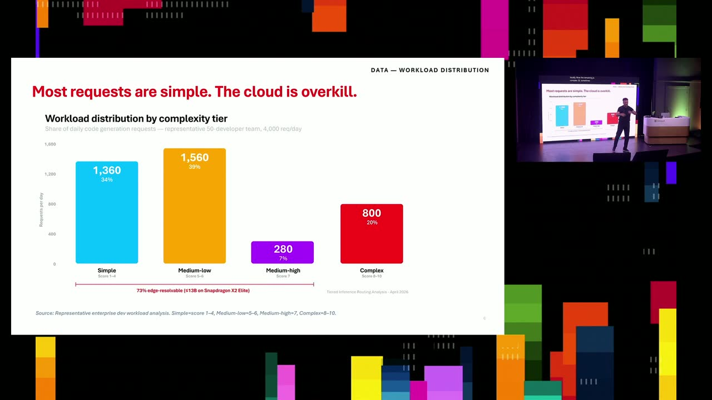
m05s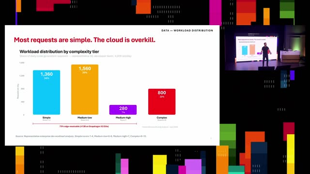
m10s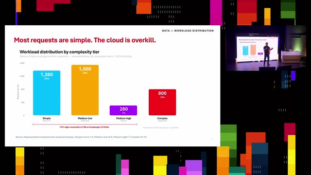
p05s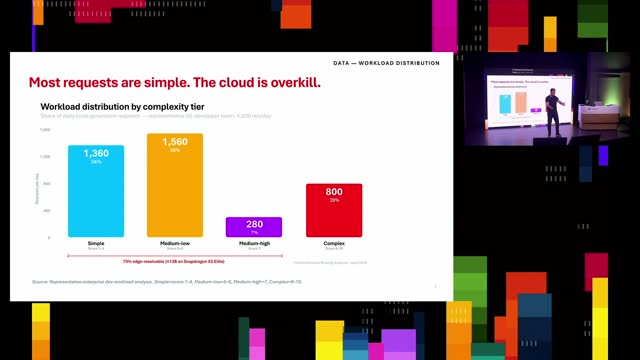
p10s]: Route simple/medium prompts to an on-device model (≤13B), medium-to-high tasks to an on-prem workstation (14B–34B, with up to ~100–120B on larger boxes), and only complex/security work to the cloud (70B+). - Snapdragon X2 Elite positioning [00:11:18
 m05s
m05s m10s
m10s p05s
p05s p10s]: An 80 TOPS NPU offering roughly 43% greater compute than the prior generation, up to ~128 GB memory [inferred], and high memory bandwidth supporting multiple data types.
p10s]: An 80 TOPS NPU offering roughly 43% greater compute than the prior generation, up to ~128 GB memory [inferred], and high memory bandwidth supporting multiple data types. - Hybrid-vs-cloud demo [00:19:08
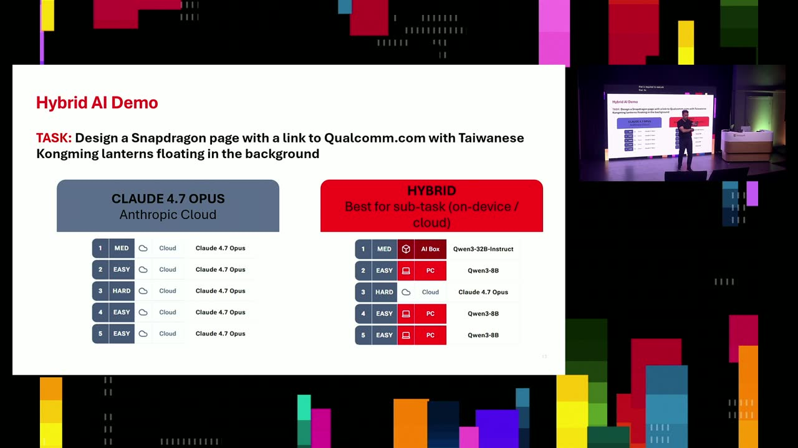
m05s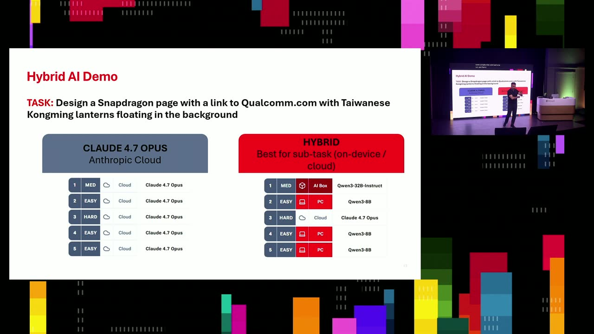
m10s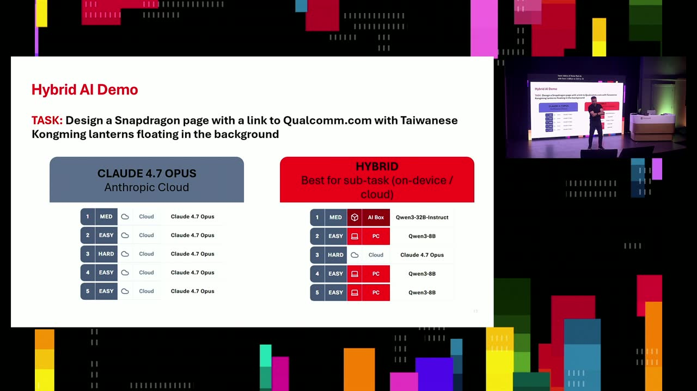
p05s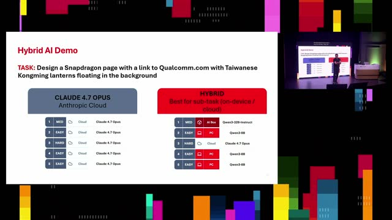
p10s]: A recreated Computex demonstration races Claude Opus 4.7 against a hybrid split (one hard task to cloud Opus, others to local models), producing identical output at roughly one-quarter the cost ($0.21 vs ~5.5 cents). - Classifier as developer IP [00:29:08
 m05s
m05s m10s
m10s p05s
p05s p10s]: Qualcomm is researching but not yet shipping a routing classifier; Martinez encourages developers to build their own as a competitive advantage, living inside the orchestrator.
p10s]: Qualcomm is researching but not yet shipping a routing classifier; Martinez encourages developers to build their own as a competitive advantage, living inside the orchestrator. - Forthcoming research paper [00:41:50
 m05s
m05s m10s
m10s p05s
p05s p10s]: The underlying entropy, quantization, and routing research has not been published yet but is promised.
p10s]: The underlying entropy, quantization, and routing research has not been published yet but is promised.
{kind=link}
{kind=link}
{kind=link}
{kind=link}
{kind=link}
{kind=link}
{kind=link}
{kind=link}
Topics covered
- Token economics of AI coding and per-developer monthly cost escalation (cited figures up to $35,000–$36,000/developer/month, multiplying 10x–100x with agents).
- Per-task token costs: docstring ~180 tokens, lint fix 210, CRUD route 460, security audit ~3,800, cross-repo refactor ~3,900.
- Workload distribution across complexity scores, claiming ~73% of requests are locally resolvable and up to ~1.6 billion tokens/day processed on local hardware.
- Integer quantization trade-offs: ~50% weight-size reduction with roughly a 5% quality gap, recommended only below complexity score 7, where activation precision matters less.
- Classifier signal design: prompt token count, abstract syntax tree depth, cross-file reference count, and security flags, with sub-20ms / sub-50-token budgets.
- Confidence fallback (the "fifth leg"): monitoring entropy growth during execution to abort and re-route to the cloud, analogous to CPU branch prediction and prefetching.
- Latency and sustainability gains: ~200ms on-device response targets, reduced cloud GPU cycles, lower power and bandwidth.
Notable quotes
"Stop routing your duck strings to a 7 billion parameter model." — Alberto Martinez
"You can replace your hardware every month and you're still saving money." — Alberto Martinez
"Don't send everything to the cloud. Send what matters to the cloud." — Alberto Martinez
Products and tools mentioned
- Qualcomm Snapdragon X2 Elite (and Stream edition)
- Claude Opus 4.7
- Claude Sonnet 4.6
- Cline [inferred]
- Claude (Anthropic) [inferred]
- Stack Overflow Developer Survey 2024
Speakers featured
- Alberto Martinez — Qualcomm, software strategy lead for the compute business
- Morris Novello — listed co-presenter (per session metadata)
Audience questioners identified in the transcript: Nathan (Lockheed); Bridget (engineer, Vision); Malika (Qualcomm product management).
Follow-up resources
- qualcomm.com (referenced as a demo link target)
Frames
{kind=link}
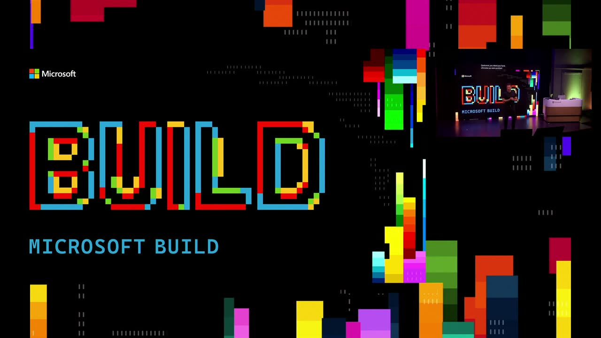
{kind=link}
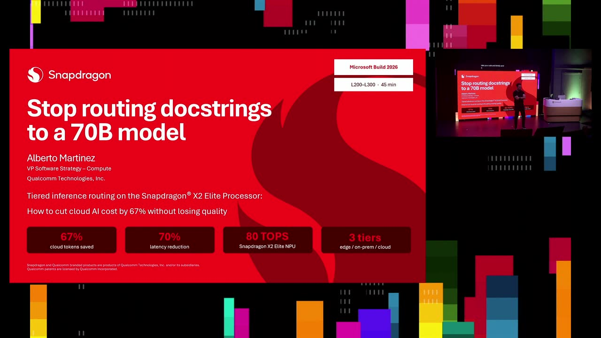
{kind=link}
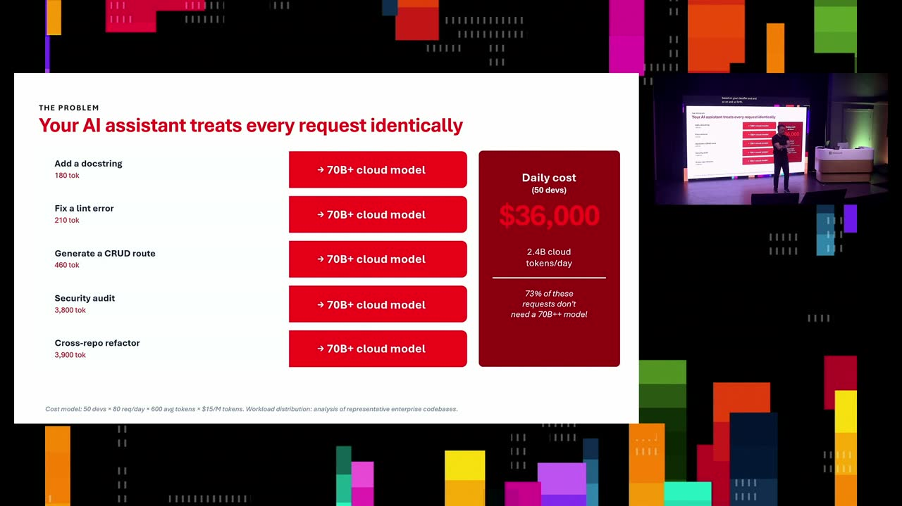
{kind=link}
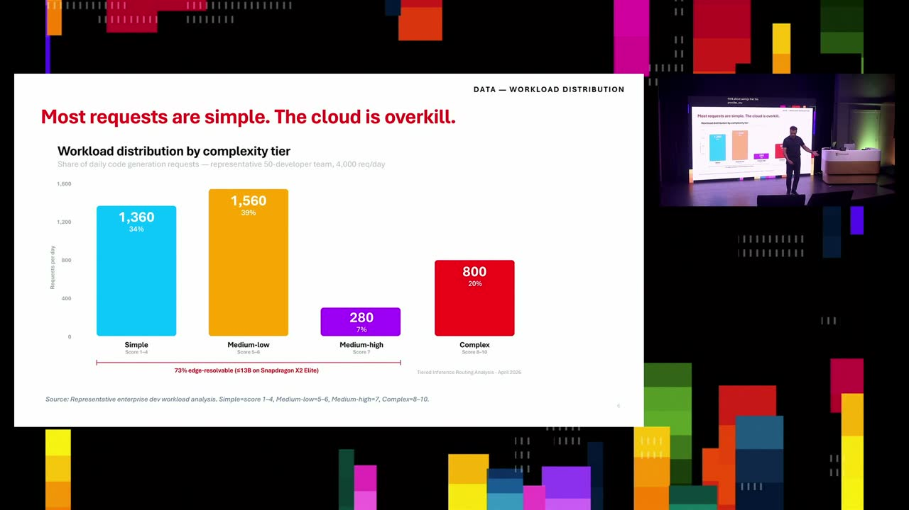
{kind=link}
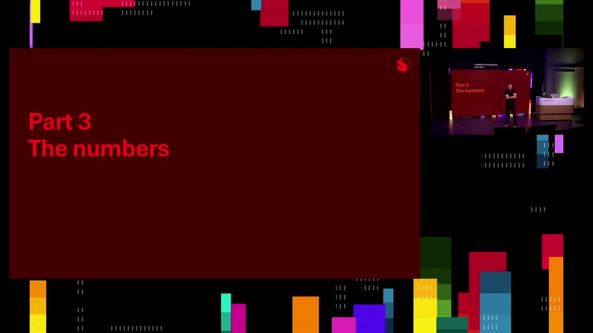
{kind=link}
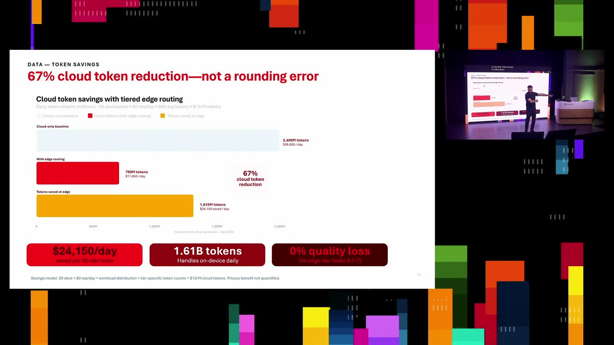
{kind=link}
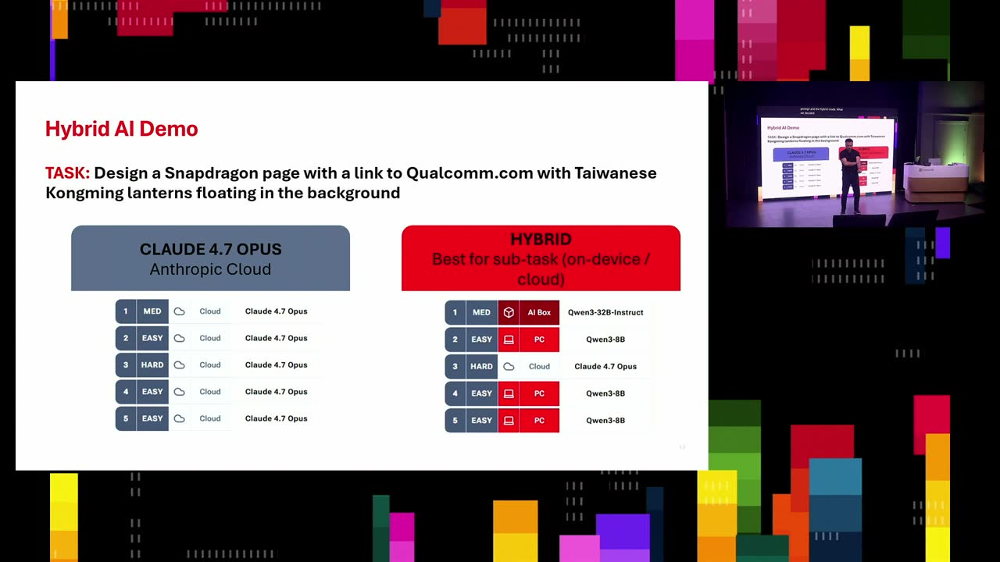
{kind=link}
{kind=link}
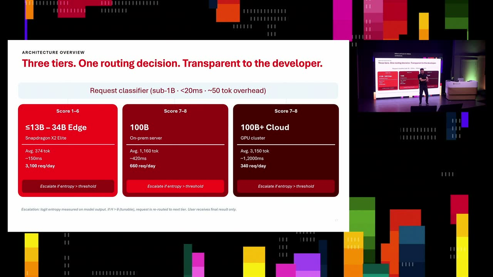
{kind=link}
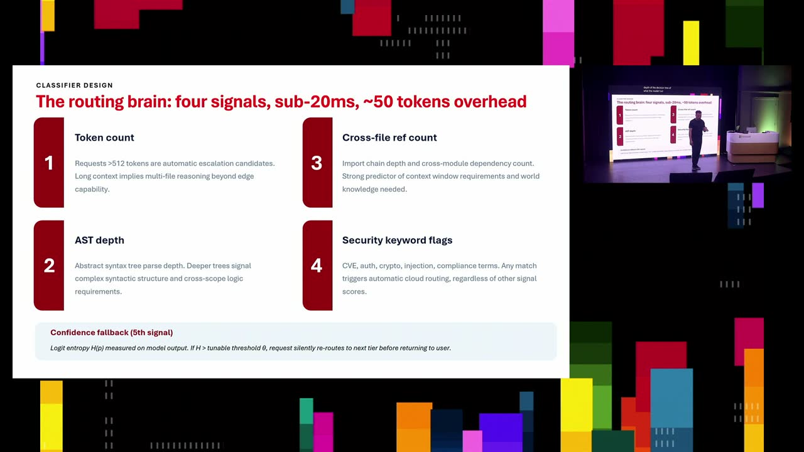
{kind=link}
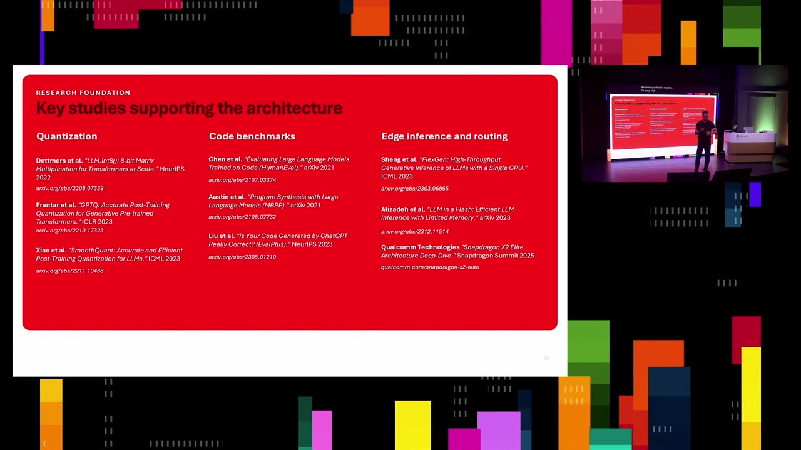
{kind=link}
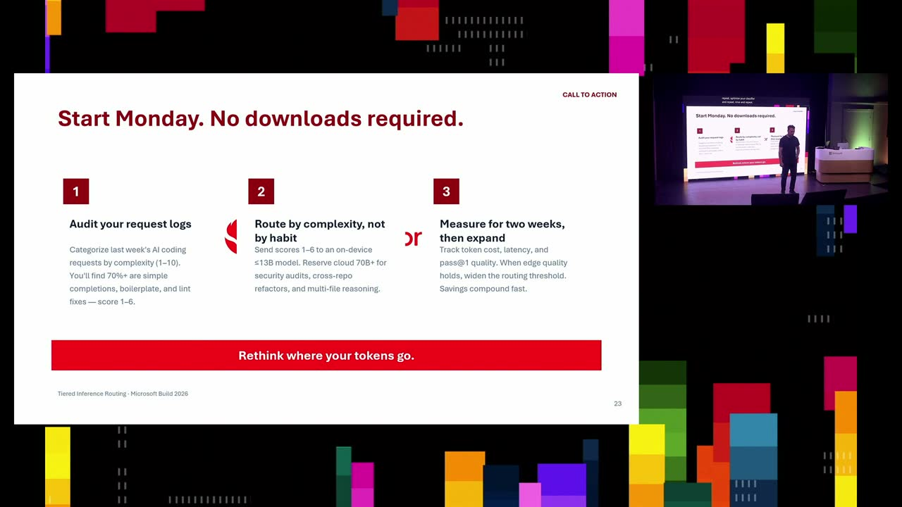
{kind=link}
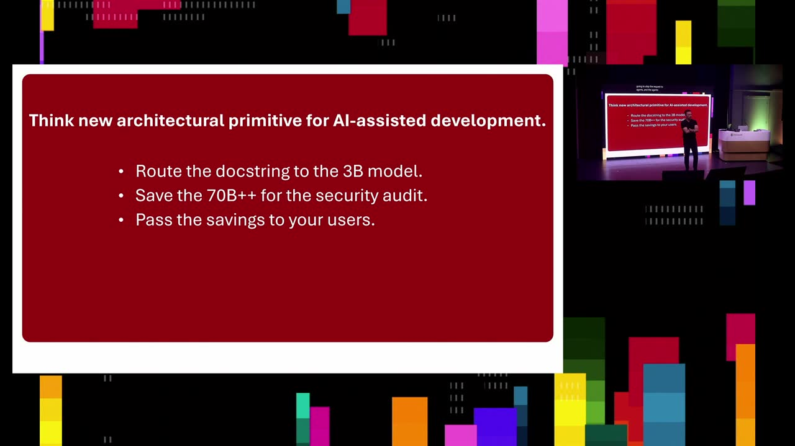
{kind=link}
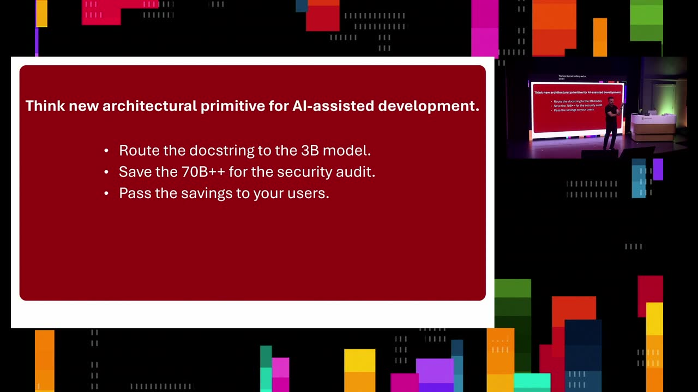
{kind=link}
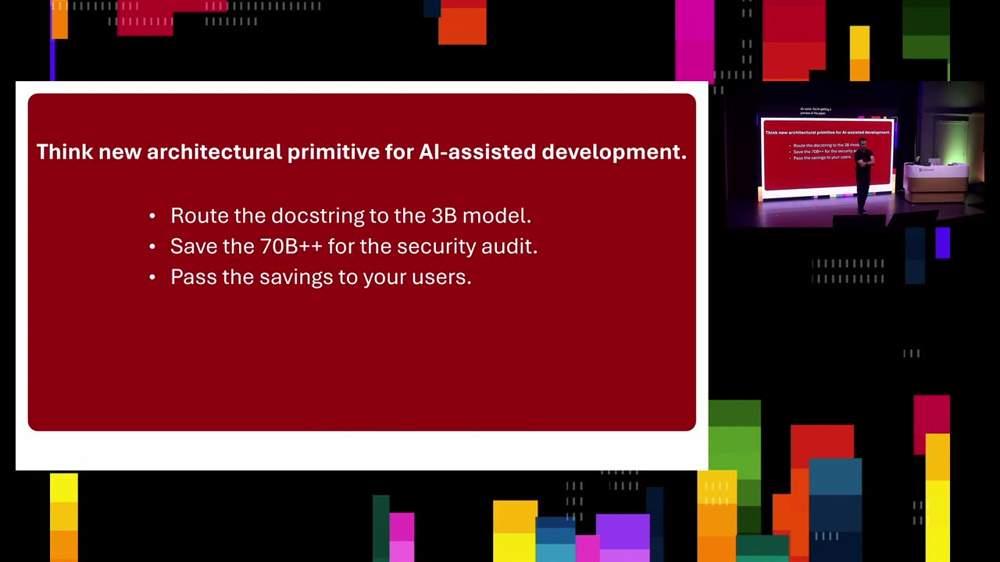
Transcript
Show / hide transcript (48,999 chars)
[00:00:01] I guess that is my cue. [00:00:04] The music is down and the spirit is low. [00:00:09] Well, welcome. [00:00:09] This afternoon it seems like we are in. [00:00:12] Energy low due to. [00:00:14] Lunchtime and no one had. [00:00:17] The coffee kick up yet? [00:00:19] I hope you have some. [00:00:20] Coffee coming in here. [00:00:23] This place is super cool because it's an improv place. [00:00:28] So I that's what I'm going to do. [00:00:30] I'm going to improv my whole presentation, see how it [00:00:32] goes. [00:00:33] All right, will that work? [00:00:35] And then we do a. [00:00:36] Whodunit mystery just to keep the energy high. [00:00:43] Because we are so few. [00:00:45] In the room, maybe we can accept questions. [00:00:48] No, maybe not. [00:00:49] He asked me whether he asked a question. [00:00:50] In the beginning or during? [00:00:52] At the end. [00:00:53] So we waited for the end. [00:00:54] To do the presentation, my name is Alberto Martinez. [00:00:58] I do work for Qualcomm. [00:01:01] I'm responsible for the software strategy in the compute business. [00:01:06] What does that mean? [00:01:07] I'm not sure it mean I have to look into [00:01:09] the future. [00:01:10] And with a crystal ball, check it a little bit. [00:01:12] To say what is again take an orchestration and all [00:01:15] this fancy works are going and look at it to [00:01:18] say maybe sometimes, but I learned something in in in [00:01:22] my experience you almost 40 years in the industry that. [00:01:25] If you want the future. [00:01:26] If you want to predict the future. [00:01:28] It's a famous quote so I don't know who said [00:01:30] there are many attributions to it, but. [00:01:34] If you want to predict the future. [00:01:35] You have to go and create it, right? [00:01:38] If you wait for someone to create it for you, [00:01:40] then you're a follower. [00:01:42] If you create the future, then you are the innovator. [00:01:44] Right, the people that follow. [00:01:46] So my story. [00:01:46] Today is about uncovering a mystery in the identic and [00:01:52] the agentic story and the orchestration story and start peeling [00:01:59] that on you to try to understand where does it [00:02:04] go right? [00:02:05] What do we need to do? [00:02:08] One thing is very clear. [00:02:09] Is while. [00:02:11] We are relying on AI, specifically agentic and big model. [00:02:16] All sizes to do work for us. [00:02:19] By the way, show of hands who raise your hand [00:02:22] if you use. [00:02:22] AI queries prompt or activities more. [00:02:26] Than a, you know, a few hours a day. [00:02:29] Let's say you spend hours and during the day raise [00:02:33] your hand. [00:02:35] You know, my friend from Qualcomm should raise your hands, [00:02:39] otherwise you are punished, all right. [00:02:42] So few. [00:02:43] Of you have spend it, how many of you had [00:02:45] actually run out of tokens? [00:02:48] You run out of tokens. [00:02:49] I actually I had a measure of how running out [00:02:52] of tokens affect my daily life. [00:02:55] Obviously at the office we don't see the token. [00:02:57] Running out until the CIO come back and say OK [00:03:01] guys. [00:03:02] You're cut off the what? [00:03:04] What they? [00:03:05] See in the back end. [00:03:06] Right. [00:03:06] Is they? [00:03:08] The dollar count are going up, right and and people [00:03:11] asking, OK, when this is going to stop? [00:03:14] And this is a trade off that is? [00:03:15] Happening. [00:03:16] We're replacing some, we're amplifying people. [00:03:19] I feel 10X more productive since I use AI in [00:03:22] a daily basis and I use it all the time, [00:03:24] not only for. [00:03:25] Research but for. [00:03:26] Development and for practice, but at the same time, my, [00:03:32] my dear wife, she's an attorney, she's not a technologies [00:03:37] and she uses AI and we had a personal account [00:03:42] and I in a personal account I wrote on no [00:03:46] tokens in few hours, right? [00:03:48] I sit down and start doing things and I run [00:03:51] out of tokens and they say chill out, wait until [00:03:54] 8:00 PM this evening in order to continue your work. [00:03:58] That's never. [00:03:58] Happened to my wife until. [00:04:01] Last weekend and they say, OK, that's an inflection point. [00:04:05] Now it's hitting the consumer. [00:04:08] Which mean we had to. [00:04:11] Do something about it. [00:04:13] It's not only making money in the counter, in the [00:04:16] back end for people that provide infrastructure and foundational models. [00:04:20] But it's also for everyday life. [00:04:22] That is becoming and. [00:04:24] As our Qualcomm CEO. [00:04:25] Christian among setting Computex. [00:04:27] This week is multiplying. [00:04:30] 10X and 100X because agents are just going to run. [00:04:34] Even a higher rate. [00:04:36] On the token, so it become a tokenization or a [00:04:39] token economics that is becoming an issue. [00:04:43] My talk is about that. [00:04:45] And. [00:04:45] If you take the rest. [00:04:46] Threat to the end, the solutions in our house. [00:04:50] It's in our hands not only from the point of [00:04:52] view of economics, but from the point of view of [00:04:55] power conservation, energy consumption, and latency. [00:04:59] With that, I told you what I'm going to tell [00:05:01] you now. [00:05:02] I'm going to tell you and then I'm going to. [00:05:04] Repeat what I told. [00:05:04] You so you can remember that at the end. [00:05:07] So I I create a. [00:05:10] Provocative message Stop routing your duck strings to a 7 [00:05:14] billion parameter model. [00:05:16] If you're a developer. [00:05:17] You know what a duck string is. [00:05:19] Basically, you're informing your code. [00:05:21] Or what is that that this code? [00:05:23] Does and a. [00:05:26] But when you take your. [00:05:27] Code and blindly send it. [00:05:30] To a. [00:05:30] Very large model. [00:05:32] You're spending tokens and something doesn't need to go to [00:05:35] a very large model. [00:05:37] So that is the conversation. [00:05:38] We're going to have. [00:05:40] So we. [00:05:40] Want to talk about token savings latency, the reduction that [00:05:43] could come up from that and it's a potential because [00:05:47] our. [00:05:47] Research show it could be a latency. [00:05:49] Reduction depending of the hardware that you have and the [00:05:52] optimization models on so forth, but the potential latency reduction. [00:05:56] The. [00:05:56] Capabilities and products that Qualcomm provide I'm sure there are [00:06:00] all this do I don't know who could be and [00:06:02] turn off a a. [00:06:04] Compute. [00:06:04] Capabilities and memory and how we analyze in our research. [00:06:08] How to develop a solution? [00:06:09] That addressed that problem that I hope. [00:06:12] You take into. [00:06:14] Account and your next design and your next. [00:06:16] Capabilities that you provided for. [00:06:19] How I I break the time here? [00:06:21] I have. [00:06:22] 38 minutes and 30. [00:06:23] 4 seconds. [00:06:24] To tell you this story and allow for question. [00:06:26] First of all, we'll tell you about. [00:06:28] What is the math and why it's broken? [00:06:30] I will introduce the not down is to elite only [00:06:32] one page. [00:06:33] Because so I get paid by. [00:06:34] Qualcomm So I do need to say these things, right? [00:06:39] Then I will tell you a video. [00:06:40] Of our demonstration of approval. [00:06:43] Concept that that it started. [00:06:45] With our emulator that I created using AI code, the [00:06:49] emulator got popularity inside Qualcomm. [00:06:52] Our CEO, Cristiano wanted to demonstrate it at Computex and [00:06:55] I took delivered to take the same demonstration and bring [00:06:59] it here. [00:07:01] I will talk about 3 tier architecture. [00:07:02] It can be more tiers. [00:07:04] I just say the minimum is 3 tiers. [00:07:06] That makes sense to me. [00:07:08] All that make different sense. [00:07:10] What we? [00:07:11] Our research and the reference to our research and. [00:07:15] We wrap it up. [00:07:16] That a good plan. [00:07:18] Or should we put? [00:07:18] Some EDM music so you guys can wake up. [00:07:23] Good plan. [00:07:23] All right, Thank you. [00:07:25] OK, where's the broken math if you? [00:07:29] Add dog string into. [00:07:30] Your prong as your prong contain processing dog streams. [00:07:33] I take about 100. [00:07:34] 80 tokens. [00:07:35] That's our research. [00:07:37] Changes. [00:07:37] If you're using. [00:07:38] The cloud you're sending to a model that is over [00:07:40] 70 million parameters. [00:07:42] That's the smallest, right? [00:07:45] If you're fixing a lint error, you're spending 210 tokens [00:07:49] if you're generating the crop route, 460 tokens if you're [00:07:52] doing a security. [00:07:54] Out it it goes off the roof, you start with [00:07:59] start. [00:07:59] With 3800 tokens to create it. [00:08:03] And if you do a cross repo factory which is. [00:08:04] About the same complexity in our research. [00:08:07] Of security outage is. [00:08:10] 3900 tokens, OK, your miles will vary based on your [00:08:14] classifier and and so on so forth. [00:08:17] And using this as an example, all the small letters [00:08:21] said that, so don't use money in that, but they [00:08:24] cost money. [00:08:25] All these things cost money. [00:08:27] Those talking cost you money. [00:08:28] That in the lower. [00:08:30] Side people are spending $36,000. [00:08:32] I have heard anecdotally from vendors and partners that in [00:08:37] some cases they're spending $35,000 per developer per month. [00:08:43] I will say that is probably Qualcomm. [00:08:46] Case on data, but if you take it in the [00:08:48] low side and the average of the curve looking at [00:08:52] the distribution in the lower side, those things $36,000.50 developers. [00:08:56] So there is a wide. [00:08:57] Range. [00:08:59] Of. [00:09:00] People spending money on this, what we do know. [00:09:03] Is when you apply identity. [00:09:04] And orchestration to this functions this go 10X. [00:09:09] So now we're going to add these. [00:09:10] And so this means instead of $36,000, we're going to [00:09:13] be paying in short order because this is a potential [00:09:16] growth course. [00:09:17] Curve. [00:09:18] You will have $350,000 or three me, you see $100,000. [00:09:21] Peter Stanberger was talking about he's spending $1,000,000 a month, [00:09:27] right? [00:09:28] Well, maybe he can do that. [00:09:29] I don't I cannot afford it personally, genius that he [00:09:34] is, I cannot afford that. [00:09:38] When you look at the. [00:09:39] Workload distribution of this complexity. [00:09:42] You see that about 30. [00:09:43] 4% of all this. [00:09:45] Workload when you take a. [00:09:46] Prompt on. [00:09:49] Average you take that we. [00:09:50] Use Cloud Sonnet 4.6 and the data coming from Cloud [00:09:54] Sonnet 4.6 to create this distribution. [00:09:57] You will see that. [00:09:59] About 1300 queries are simple in the in the score [00:10:04] of 1 to 4 complexity and they have reference of [00:10:08] how that score is measured about medium to low. [00:10:13] About 1500 queries of that medium to high another 7%. [00:10:18] And by the way. [00:10:20] If you do, if you. [00:10:22] Send those queries to what is not drawn X2 elite [00:10:25] with a capacity and compute the memory bandwidth that you [00:10:29] can run it. [00:10:29] Locally. [00:10:31] Now the remaining is complex, 20%, sometimes 30%. [00:10:38] That you will have to. [00:10:39] Send to a model that the X2 elite cannot run. [00:10:43] You can send it to a more capable on Prem [00:10:47] device or you. [00:10:48] Will send it to the. [00:10:49] Cloud so. [00:10:50] It's talking about 3 tiers, that's what. [00:10:51] We had in mind. [00:10:52] You have your. [00:10:54] Personal computer or the computer at your desk. [00:10:57] You might have a workstation or an on Prem headless [00:11:00] machine. [00:11:01] And then you have a cloud you think about saving [00:11:04] that this provide. [00:11:06] You can justify pretty much any hardware in your office. [00:11:12] Any hardware sitting in your office and you can explain [00:11:15] that to your CIO. [00:11:18] So in the spec of the why we say this [00:11:20] now that I want to elite because it's a new [00:11:23] generation of product. [00:11:25] It's have 80 tops capacity, it provide 100. [00:11:31] 43% greater compute. [00:11:32] Capacity to our previous generation provide auto 122 gigabyte of [00:11:37] memory up to 225 GB per second, memory bandwidth that [00:11:41] is in the Stream edition, 152 in the Elite edition [00:11:45] and support your favorite data types. [00:11:49] Generally speaking, now there is a differential between data. [00:11:52] Types that I will also talk about. [00:11:54] Because it's important to address so far with me, right? [00:12:00] So. [00:12:01] Money expenditure. [00:12:04] Breaking it down, The question is how right? [00:12:10] Let me address for a moment the quantization. [00:12:12] Question. [00:12:14] It's tremendously true that. [00:12:16] Developing code in floating point historically have been an easier [00:12:21] task and actually from the point of view precision provide [00:12:25] better precision and the other hand when you use integer [00:12:29] formats especially in the. [00:12:31] Weight you can head out to 50% which is not [00:12:33] taking. [00:12:34] Into account in my calculations, 50% run reduction over floating [00:12:38] point. [00:12:40] So that mean a model that takes 50 gigabytes of [00:12:44] memory or 100 GB of memory in floating point and [00:12:47] in TA would take 50 gigabytes and now it fits [00:12:51] in the right format. [00:12:55] Then bandwidth savings, because now with a smaller waist size [00:12:59] in tier, we all know that. [00:13:00] Then you're consuming half the memory bandwidth or 1/4 memory [00:13:03] bandwidth into using in Tier 4. [00:13:08] And it reduces your power. [00:13:10] In general for many reasons, but in floating point. [00:13:15] Or in Tier 16 activations. [00:13:18] Preserve forward and numerical precision as critical for the instructions. [00:13:22] Avoid activation, collapse and. [00:13:25] We support it. [00:13:26] The point? [00:13:27] I'm trying to make that is your power conscious, memory [00:13:31] conscious and in tier format. [00:13:34] What reducing tier format might take the task? [00:13:36] If you look at research. [00:13:38] In this the quality gap. [00:13:41] Can be reduced by 5. [00:13:42] Percent if you're in the tolerance of your precision. [00:13:46] This is a good thing is in any complexity score [00:13:49] one to seven. [00:13:50] Now as you go to a complexity score of greater [00:13:53] than 7 then I wouldn't recommend to move your quantization [00:13:57] to integers because now your precision is become. [00:14:00] Very, very relevant. [00:14:03] OK, with that plug to the hardware. [00:14:06] Let's talk about the numbers. [00:14:08] What the research show if you look at this dual [00:14:12] axis Y axis chart you will find. [00:14:15] Out on the left hand side the. [00:14:17] Request per day and for. [00:14:19] This research again we use Sonic 4.6 and in the [00:14:25] Y axis. [00:14:26] The average tokens per request if you divide between. [00:14:32] Up there and about. [00:14:34] Typical task this is a. [00:14:35] Summary of the task. [00:14:37] You know, we call access the task that we. [00:14:39] Did in the. [00:14:39] Research, but there is about. [00:14:41] 20 to 30 different task type that you can talk [00:14:45] about if you look. [00:14:47] At the the. [00:14:50] Tokens request per complexity. [00:14:52] You will see the majority, you see the curve. [00:14:55] Is listed to the. [00:14:56] Left end request per day and to the. [00:14:59] Right end token complexity. [00:15:02] Is you see the linear curve? [00:15:03] So you can see that. [00:15:05] On device you can have. [00:15:08] Up to. [00:15:08] 3100 requests on Prem device. [00:15:12] There is more. [00:15:13] Capable to do. [00:15:14] An OS 660 requests and the remaining. [00:15:17] Go to high complex models. [00:15:20] That will save you a number between 50 to up [00:15:23] to 70. [00:15:24] Percent. [00:15:25] Of the computational on your. [00:15:28] Tokens dedicated to computation. [00:15:36] The way we divided. [00:15:37] This and in what prototype? [00:15:40] Give us. [00:15:41] A distribution that you could use in the same $36,000 [00:15:46] calculator above, you can save up to $24,000. [00:15:50] So that per day. [00:15:52] By dividing the task or dividing the prompts into tasks [00:15:56] that can be executed and independent models. [00:16:02] So that will be a one point 1.6 as of [00:16:05] April. [00:16:05] 1.6 billion tokens that can be processed. [00:16:10] Locally, I want you to. [00:16:13] Hear that one more time? [00:16:16] 1.6 billions could be processed locally and I'm not telling [00:16:22] you a server class on your desk, I'm talking to [00:16:27] you. [00:16:27] About your laptop. [00:16:30] Right, or I'm talking to you. [00:16:32] A more capable word. [00:16:33] Station, I'm not saying. [00:16:37] Put a. [00:16:37] Rack right in your desk. [00:16:41] Water cooled. [00:16:42] Rack on your desk. [00:16:43] That's not what I'm talking about. [00:16:44] I'm talking about the. [00:16:44] Hardware that you can go. [00:16:47] And buy today and Best Buy and you can say [00:16:53] $1.6 billion billion tokens with no quality loss, zero quality [00:17:02] loss for developers. [00:17:06] I mean, especially for the CIOI, don't know how many [00:17:09] CI OS are here, maybe not too many, maybe in [00:17:11] the cameras in the other side, right? [00:17:13] I don't know how many of you, but I'm sure. [00:17:15] You'll see how will love. [00:17:17] To hear this conversation and we're making this conversation real [00:17:21] moving forward. [00:17:25] So what I'm going to show you is the demo [00:17:27] is a video of the demo because there is no [00:17:30] set up here to do an actual demo. [00:17:32] But this is the same demo that. [00:17:34] That was shown on computech. [00:17:36] For by Cristiano Amon or a version of it. [00:17:40] Because you know if you are ACEO, your demo can [00:17:43] be worked on right until the last minute. [00:17:46] Right of the presentation, one can make changes to that [00:17:49] presentation. [00:17:50] If you are a researcher. [00:17:52] On me you ended up, you know, presenting your your [00:17:56] final deck to the bill, Microsoft Bill. [00:18:00] Got at least a walk. [00:18:02] One week or two weeks ahead of the presentation, at [00:18:05] least. [00:18:06] Quiz. [00:18:07] I put it a little. [00:18:07] Bit later but I did the best I could. [00:18:10] So. [00:18:10] Here it is. [00:18:12] The demo what it does we take the send prompt. [00:18:16] Which is said. [00:18:16] Design is not drag on page with a link to [00:18:19] aqualcomm.com with Taiwanese coming Lantern floating in the background. [00:18:23] Now this is a super simple task, but it's. [00:18:27] Collapsed, right? [00:18:28] It's a. [00:18:28] Prone that it's collapsed. [00:18:31] The most complex. [00:18:33] Task in here is creating the Lantern floating in the [00:18:36] background. [00:18:38] So a little bit of. [00:18:38] Physics model that need to be run, a planning of [00:18:42] that in the background, execution of that is some complex [00:18:46] code that had to be run and that is over [00:18:49] a 70 million 70 billion parameters. [00:18:52] That is required to. [00:18:53] Execute that. [00:18:54] So smaller parameters won't do a good. [00:18:56] Work. [00:18:56] We try. [00:18:57] We have videos of those that that do. [00:19:00] With from 3 billion to 30 billion to 70 billion [00:19:03] to 120 billions, we had the same request and we [00:19:06] broke it down for the demo. [00:19:08] Today I will show you the two streams, the 4.7 [00:19:13] oppose in Entropic Cloud or the hybrid mode where. [00:19:18] We divide the fight tasks. [00:19:20] There are the. [00:19:21] Classifier and this is the keyword. [00:19:24] So start using now. [00:19:25] The classifier decided what's required. [00:19:28] In order to satisfy the. [00:19:30] Prompt in the hybrid mode what we decided to do [00:19:33] or the. [00:19:33] Classifier decide to do. [00:19:35] Is fight tasks. [00:19:36] 1 is a median. [00:19:38] It requires up to 30. [00:19:39] 2 billion parameter model and three are easy that can [00:19:44] run in a a billion parameter model and the PC [00:19:47] and one is hard. [00:19:49] The coming lanterns floating in the background that executed in [00:19:54] a clock 4.7 opus and we're running and we let [00:19:58] them race and see. [00:19:59] What is the result of? [00:20:00] That sound like an interesting thing to see. [00:20:04] Yeah. [00:20:05] Want to see the race? [00:20:07] There is an F1 car parked in the front and [00:20:11] angi love this one. [00:20:13] OK, these are running in the left hand side. [00:20:18] You, you have the opus. [00:20:20] 4.7 and you expect is running faster because the hybrid [00:20:23] model hasn't been optimized. [00:20:25] I expect that to. [00:20:26] Change significantly over time as our software team what is [00:20:30] my software team is sitting the. [00:20:33] Head of the software team sitting in the. [00:20:35] Back I'm blaming on him. [00:20:38] So we have to optimize it a little bit better [00:20:40] and you can see the counters going, I'm going to. [00:20:42] Accelerate. [00:20:43] This a little bit because then you might get bored [00:20:46] by seeing Co running watching the matrix fall down. [00:20:50] Right, that's like watching The Matrix writing Python code. [00:20:54] I'm going to move it faster. [00:20:58] So now you have the same. [00:21:01] Result because that was done for prepared for computex and [00:21:05] say thank you Taiwan. [00:21:07] But as you. [00:21:07] See in the left hand side and the right hand [00:21:10] side is the same picture. [00:21:12] The lanterns actually move when it's running, and the model [00:21:16] that executed resolve the same, but the different is. [00:21:20] The one in the left. [00:21:22] Is 4 times more expensive than the one on the [00:21:26] right. [00:21:27] The one on the left. [00:21:28] Took. [00:21:30] $0.21 talking wise. [00:21:32] Now imagine that this is not. [00:21:34] Just as the developer because everything we do today is [00:21:37] actually code any. [00:21:38] Prom. [00:21:39] Create a derivative. [00:21:40] Either you tell them to. [00:21:41] Create a PowerPoint presentation. [00:21:43] Review Excel spreadsheet, compile data sets. [00:21:46] It is. [00:21:47] Writing code. [00:21:49] It's writing Python, it's JavaScript, HTML compilations, it's doing code [00:21:54] and as you wrote code and if you. [00:21:56] Classify the data correctly. [00:21:59] You can. [00:21:59] In this particular case, we're saving for X and we [00:22:02] said. [00:22:02] Before at least 50. [00:22:03] Percent you can reduce. [00:22:05] So look at the 2. [00:22:06] Streams of that gamut, the opportunity to present itself. [00:22:12] If. [00:22:13] People, how we can justify paying for X more? [00:22:18] It's hard to justify right? [00:22:21] Like in the old days, I did learn to learn [00:22:24] to program in an IBM 460 and that all with [00:22:27] a punch card and everything. [00:22:30] So if you ever know what that is, look it [00:22:33] up in a museum and we. [00:22:34] Send everything to a server. [00:22:37] Right. [00:22:37] And we had a little monitor and in my case, [00:22:40] a punch card machine. [00:22:41] Not even a terminal for my case, because I was [00:22:43] an engineer in electrical engineering, not in computer science. [00:22:47] So terminal was for computer science, not for engineers, not [00:22:51] for electrical engineers. [00:22:53] Anyway, I'm degracing like an old man. [00:22:56] So Forex. [00:22:57] $0.20 versus 5.15.5 cents, $14,000 a month if you do [00:23:02] this in a recurring fashion. [00:23:04] So imagine your marketing team is preparing web pages, product [00:23:10] launches and so on, so forth and versus almost $4000 [00:23:15] differential. [00:23:19] Well, this is one way to save the planet, guys. [00:23:22] Don't send it to the everything to the cloud. [00:23:25] Send what matters to the cloud. [00:23:29] All right, So what this mean? [00:23:30] For provider developer. [00:23:32] And users all benefits simultaneously, 55% at least. [00:23:39] Cloud GPU cycles consume. [00:23:43] We can get. [00:23:43] I didn't shoot demonstration with sub milliseconds because the demo [00:23:46] didn't provide that. [00:23:48] If the demo will have shown my sub millisecond latency. [00:23:51] I will have to show you that, but research. [00:23:52] Show that we can get to 200 milliseconds responses on [00:23:56] device. [00:23:57] Turn around and. [00:23:59] At least user cost reduction. [00:24:01] This is tremendous value, tremendous, tremendous value. [00:24:07] So if you're. [00:24:08] In the case of that partner that is paying $35,000 [00:24:11] a month per. [00:24:12] Developer per per developer if they. [00:24:18] Integrate a solution like this right $15,000 savings or more [00:24:23] than $15,000 savings that can buy. [00:24:26] A lot of hardware. [00:24:29] Hardware that is staying with the user 34. [00:24:32] Years between the replacement cycle. [00:24:35] They can replace the cycle. [00:24:36] Hardware every month and it still will be saving money. [00:24:44] I mean, get that in like you can replace your [00:24:46] hardware every month and you're still saving money. [00:24:50] It's an incredible, powerful equation. [00:24:56] So let's talk about how to achieve that the way [00:25:00] we. [00:25:00] Envision this at 3:00. [00:25:01] Tiers in this case. [00:25:04] 13 billions and below for. [00:25:06] Sure, up to 34. [00:25:07] Billions and soon to release. [00:25:10] Architectures if you complexity score. [00:25:14] Between this is logic entropy. [00:25:18] You will see the research in the in the back. [00:25:21] In the score 1 to. [00:25:22] Six smaller models. [00:25:25] We run it locally up to 100 billion parameters or [00:25:28] slightly more 120 billion parameters can run on print workstations [00:25:33] or servers. [00:25:34] These are not what are cool. [00:25:35] This is just something like look at little box that's [00:25:38] sitting under your desk or anything bigger than that. [00:25:42] You just send it to the cloud. [00:25:43] Like security outlet code repo. [00:25:48] Right, send it to the cloud. [00:25:53] We look at the. [00:25:54] Energy entropy. [00:25:55] Threshold for that or the entropy threshold for that and [00:25:59] the way we look. [00:26:00] At a how to make? [00:26:02] A possible way to look at it? [00:26:03] That's what we call the classifier. [00:26:08] The classifier become a very important IP and you developers. [00:26:11] To think about the classifier as your capability, I mean [00:26:17] the concept. [00:26:18] Is simple like any great ideas, the concept is simple. [00:26:23] The opportunity is developing the IP that solved the problem [00:26:28] better than others. [00:26:31] The way we look. [00:26:31] At this problem is for prone analysis. [00:26:34] Right, we first. [00:26:35] Look at the prompt and look at the talking count [00:26:37] for the prompt. [00:26:39] Think about a small classifier which. [00:26:41] Is a small model. [00:26:42] That need to react in sub 20. [00:26:44] Milliseconds. [00:26:45] What's the 20 milliseconds? [00:26:46] Because you start looking at below 200 millisecond threshold response [00:26:50] time, You look at 10% of that. [00:26:51] A rule of thumb. [00:26:52] 20 milliseconds my response time. [00:26:54] That's my top. [00:26:55] Threshold for my classifier, so say my classifier. [00:26:58] Cannot take more than 20 milliseconds and it. [00:27:00] Cannot use more than 50 tokens, so. [00:27:02] It's lost in the noise. [00:27:04] Of the request if you. [00:27:06] See me as quainting As for two reasons I know [00:27:09] used 2 lies in my face and a shy person [00:27:12] believe it or not and second I'm short sighted so [00:27:16] I want to focus in your face and then I [00:27:19] have to Sprint second. [00:27:21] We look at the abstract system 3. [00:27:24] Part that meaning when you're parsing. [00:27:27] How deep is the tree? [00:27:29] Of the official logic. [00:27:32] Do you had an if cloth in your prone? [00:27:34] Right is you say OK create a web. [00:27:37] Page that it had. [00:27:40] A landing page. [00:27:40] For snapdrags to elite, however, if we. [00:27:44] Haven't released a snapdrags to elite yet. [00:27:47] I want you to. [00:27:47] Create a page that looked like this however. [00:27:50] Is I want a different page that does this? [00:27:52] And use data from this set or that set so [00:27:55] your your depths or the decision. [00:27:58] Tree or what the model had to do is increasing. [00:28:01] So you can create the classifier to look into how [00:28:03] deeply. [00:28:05] Embedded is your decision tree to make a decision or [00:28:09] where the request need to go the first thing we [00:28:12] looked. [00:28:12] At is CRO file. [00:28:13] Reference count. [00:28:14] So look at this. [00:28:16] E-mail and look at that presentation. [00:28:19] Search the web for this information. [00:28:22] Combine that and to create a solution. [00:28:25] The more CRO file reference. [00:28:27] Count by the way all. [00:28:27] These are threshold. [00:28:28] That you can manipulate to find your best point and. [00:28:31] Actually your model can be. [00:28:32] Adapted for the. [00:28:34] You know you can make it recursive to make your [00:28:36] model. [00:28:36] Be adaptive. [00:28:37] And self learning. [00:28:39] And finally. [00:28:40] Security flags is an authorization request. [00:28:44] It's a crypto. [00:28:44] Injection. [00:28:45] It's an injection or compliance term. [00:28:47] Any mass that trigger a compliance security compliance query. [00:28:52] Triggered a red flag for us as when we look [00:28:55] at the classifier. [00:28:56] To break that down into OK. [00:28:58] Let's look at this carefully before we go further. [00:29:01] When we had a security. [00:29:02] Reflect then we we pay very deep attention to a [00:29:07] call, a confident fall back. [00:29:10] So what we do in the confident fall back is [00:29:12] the entropy. [00:29:13] Of the query is getting. [00:29:14] Too complex. [00:29:16] Right real time of the of the query is being [00:29:19] executed. [00:29:21] Then we can stop the query and fall back to [00:29:23] cloud. [00:29:25] So what you do is. [00:29:26] OK, the entropy is increasing. [00:29:28] The models say yes. [00:29:30] But it's taking too long, right? [00:29:32] So that means our entropy is high. [00:29:35] So before we go. [00:29:36] Deeper into the into the weeds. [00:29:39] Stop it and. [00:29:41] Reshuffle up to the cloud so it's always a fall. [00:29:43] Back situation and. [00:29:45] Then you can look. [00:29:46] At the what went wrong right over time and correct [00:29:49] it. [00:29:50] So the power here for all developers is how we [00:29:54] build that classifier, obviously. [00:29:56] There's a lot of work that can be done in [00:29:58] order to improve it. [00:29:59] Create a more powerful. [00:30:00] Classifiers. [00:30:02] That's the nature. [00:30:03] Of the power of the. [00:30:04] IP that can be created for companies like. [00:30:07] I've seen tons of companies here at the build conference [00:30:10] that that. [00:30:11] That would be super interested to create a powerful. [00:30:13] Classifiers that. [00:30:15] Allow us to create. [00:30:16] The solutions almost on time to open for questions, but [00:30:21] I don't know you. [00:30:22] You guys. [00:30:23] Don't think like that. [00:30:23] You have too many questions. [00:30:25] Clear as mud. [00:30:30] This is a boring the. [00:30:31] Other ones were kind of boring. [00:30:32] This is the most boring page. [00:30:34] You know when you do. [00:30:35] Research you like research reference. [00:30:38] I know when I read my research reference I talk [00:30:41] here about. [00:30:42] Entropy calculations. [00:30:45] You know, quantization research. [00:30:47] I'm sorry. [00:30:49] And etch inference and routing capabilities research that had happened [00:30:53] in this. [00:30:53] I know when I get attribution for all the good. [00:30:55] Work that people. [00:30:56] Had done, I mean to me, but to all the [00:30:58] people that had done research, as you know new research [00:31:00] is based on some other people research and take it [00:31:03] to the next level. [00:31:04] So thank you to. [00:31:06] All those ladies and gentlemen that have work on creating [00:31:10] enough. [00:31:10] Capacity for us to talk. [00:31:11] About these things at this point in time. [00:31:17] So finally wrapping it up for for us the evidence [00:31:21] is. [00:31:22] 73%. [00:31:24] Can't be resolvable and you put a gap on it. [00:31:26] That 50% it would be super happy. [00:31:28] Even 10% is a lot of. [00:31:29] Money, but research showed. [00:31:33] The Max top. [00:31:34] Of that is about 70. [00:31:35] 3% today. [00:31:39] 68% of Stack Overflow Developer service in 2024 people are [00:31:44] using. [00:31:45] Tools in 2020. [00:31:46] 4 for documentation bottler plates. [00:31:50] OK, that is 100% local if you look at 70. [00:31:54] 3% enterprise code based. [00:31:56] Warlock Analytics study 50 developers. [00:31:58] Team analysis cross maintain heavy. [00:32:00] Code base 50 to 60. [00:32:03] Percent. [00:32:04] Use lower edge resolutions, so that means also. [00:32:07] Small models running locally and even. [00:32:10] If you if you go to the opportunity to. [00:32:14] Optimize for integer quantization. [00:32:17] You will find out you lose about. [00:32:18] Only 55. [00:32:19] Percent on your precision. [00:32:21] We give you tremendous memory capacity and for a local [00:32:25] device, tremendous reduction in power, tremendous reduction on bandwidth requirements [00:32:30] that makes you your model super. [00:32:32] Powerful to execute and a. [00:32:34] Power efficient MPO so building yourself. [00:32:40] That's my call to action. [00:32:43] Look at your request logs category your last week. [00:32:47] AI coding request by complexity. [00:32:51] Find that ratio. [00:32:53] For you at the simple request completion bullet plays lean. [00:32:58] Fixes route by complexity. [00:33:02] No. [00:33:02] By have it, it's easy to send everything to a [00:33:05] bigger model. [00:33:06] You know it's going to solve it, but it's it's [00:33:10] like moving a gas. [00:33:12] Hustler car to go for groceries to block away, right? [00:33:17] Just it's a waste of. [00:33:18] Resources measure for two weeks, right? [00:33:26] Track the talking. [00:33:27] Cost the latency and then repeat. [00:33:32] Optimize your classifier and repeat. [00:33:35] Rinse and repeat. [00:33:38] That is the solution space. [00:33:40] We can not only save money, but we can save [00:33:42] some polar bears habitats and some Penguins in the other. [00:33:46] Side of the world all right as we do this. [00:33:50] And I will open it up for questions. [00:33:59] I was asked to plant some questions, but I didn't [00:34:01] do it. [00:34:05] The gentleman in the front. [00:34:08] If you can tell me who you? [00:34:09] Are that would be great. [00:34:11] This is Nathan. [00:34:12] I'm with Lockheed. [00:34:14] When we do these prompts, often times my prompts are [00:34:19] quite large and the prompts themselves are complex, but they [00:34:25] could be broken down and sent off to separate agents [00:34:30] or have pieces done here, there, and elsewhere. [00:34:35] My typical work, I rarely see that happen with the [00:34:39] automated features in Klein and Clod, but periodically I do [00:34:44] see that come up. [00:34:46] Now this classifier you were talking about, that sounds like [00:34:50] something we would have to write. [00:34:55] Great. [00:34:56] Thank you for the question. [00:34:58] The classifiers are not readily. [00:35:00] Available. [00:35:02] We are working on that research ourselves and make up [00:35:07] make. [00:35:08] Available that classify. [00:35:10] I'm but I'm promoting the. [00:35:12] Ecosystem to create them. [00:35:14] Right now you. [00:35:16] Could create it yourself. [00:35:17] I don't think that there is a powerful IP to [00:35:20] have. [00:35:20] And it's a. [00:35:21] Competitive advantage to create a IP that create that. [00:35:25] Classification opportunity. [00:35:26] So you think about it and you're competing with, Oh [00:35:29] no, you're lucky, you know your next competitor. [00:35:32] Is you both are using the same classifier. [00:35:35] You both do not have value or competitive advantage in [00:35:39] for your IT enterprise support. [00:35:41] If you write the classified yourself. [00:35:43] You might create a competitive advantage for you, or you [00:35:47] can. [00:35:47] Have people write the classifier. [00:35:48] For you, I don't think it's that. [00:35:51] Difficult a further 1st order classifier. [00:35:54] Right, it's not that difficult. [00:35:57] Getting to a very known. [00:35:59] Classifier that is retroactively learning and improving over time that [00:36:04] that is a little more sophisticated work and I encourage [00:36:09] all of you to. [00:36:10] To develop that crisis, the classifier will live in an [00:36:13] orchestrator. [00:36:15] Don't think about. [00:36:15] It that way. [00:36:17] Your orchestrator should own the classifier because the orchestrator. [00:36:21] Is the one that is. [00:36:22] Going to ship the request to agents. [00:36:25] And the. [00:36:25] Agents are attached to models. [00:36:27] So now there's a different problem there that also we [00:36:29] are doing research on. [00:36:31] Which is. [00:36:32] Why a model? [00:36:33] When and who? [00:36:34] Today we do a. [00:36:35] Test then by knowledge right we know this model. [00:36:39] Is capable to do full, therefore we send it to [00:36:42] full. [00:36:43] Model right in the near. [00:36:47] Future I expect that to. [00:36:48] Change meaning. [00:36:50] Capabilities of the model, the orchestrators, the devices. [00:36:53] Need to be known in a global fashion. [00:36:56] Sorry did I answer. [00:36:57] I hope I answered your question. [00:37:03] Great question. [00:37:10] It could you tell me who you are? [00:37:11] I appreciate it. [00:37:12] Yeah. [00:37:13] I'm Bridget. [00:37:14] I'm an engineer at Vision and I was kind of [00:37:16] interesting more on the classifier and like on the slide [00:37:20] you had like a fifth section that you haven't talked [00:37:23] about. [00:37:23] So it was kind of and then also talking about [00:37:25] classifiers when you're like developing from yourself, how you can [00:37:28] standardize them across second organization because I know it's more [00:37:32] of like an independent thing currently. [00:37:35] The fifth leg, I thought I did mention it, but [00:37:39] let me let me restate it because my handle landed. [00:37:43] The fifth leg is your fall back, right? [00:37:47] You're the four. [00:37:48] Prongs on your classifier will not be sufficient every time, [00:37:55] right? [00:37:56] They will not. [00:37:57] Therefore, they will be, let's call it a prediction error, [00:38:02] your classifier. [00:38:03] Is making a prediction so like we did in CPU [00:38:06] architecture? [00:38:07] I did work on CPU architecture at some point in [00:38:09] my career. [00:38:10] When we look at CPU. [00:38:10] Architecture we have prefetcher and prefetcher had to determine what [00:38:13] is the next instruction to execute and go in the [00:38:16] right direction so you know that you also know that [00:38:18] it's not. [00:38:19] Perfect, I'm failing to to. [00:38:22] You have to have a fall back. [00:38:24] When it fail. [00:38:25] You have to have a fall back, so it's the [00:38:27] same concept. [00:38:27] Here using that architecture knowledge to say OK I have [00:38:31] to have a fall back is my predictor is. [00:38:33] Failing to classify this correctly, I need to. [00:38:36] Have a measure of. [00:38:38] Success while it's executing and the measure of. [00:38:43] Success is the entropy when I look. [00:38:46] At the entropy as measure. [00:38:48] By I put the research there a measure by and [00:38:51] that entropy is growing faster than my expectation. [00:38:56] Then I. [00:38:56] Abort the request. [00:38:59] And then in this. [00:39:00] Case you have two choices, you can try to reclassify. [00:39:04] Right, you have more. [00:39:05] Than two, but at least two you can try to [00:39:07] reclassify. [00:39:08] Although the answer will be the same if you use [00:39:10] the same parameter, you have learned nothing and or. [00:39:14] Send it to the cloud, right? [00:39:16] So eat the bullet. [00:39:17] Send it to the cloud and pay the cost. [00:39:20] Because you you want a. [00:39:21] Proper answer, not a hallucinated answer. [00:39:26] Thanks. [00:39:27] Yeah. [00:39:27] Thank you. [00:39:38] Hey I'm Malika, I'm from Qualcomm product management team. [00:39:41] I swear I didn't plan you to ask a question. [00:39:43] You did not. [00:39:46] Question I had was if the models have this bigger [00:39:51] size and smaller size subsets that we can query for [00:39:55] different tasks. [00:39:58] Do you perceive any system level changes? [00:40:01] Like how will the application development be around it? [00:40:07] I, I don't think it's different than application development that [00:40:12] lean on orchestration, right, So. [00:40:14] I mean if time permits, can we go through like [00:40:18] a creating a video, right? [00:40:19] If we make this video creation model into three parts [00:40:24] one of audio, video and sentiment analysis, now the application [00:40:30] instead of managing one model output, it now has three [00:40:35] model outputs. [00:40:37] Yes, that's one way. [00:40:39] And the other one is, is it we've seen that [00:40:43] specific track. [00:40:45] So you have 3 tracks. [00:40:47] Right, the video, the sentiment and the audio and your [00:40:50] example. [00:40:51] Even within those 3 tracks, you can classify based on [00:40:55] the task assigned to the to the query. [00:40:59] So you can even parse that even further. [00:41:04] Each one of them will have their own type of [00:41:07] entropy limits, and each one of them will. [00:41:10] Have a classifier. [00:41:12] Format that the diverse you're talking GNI. [00:41:16] Right, in this case we just behave a. [00:41:19] Slightly different than LLMS, right? [00:41:22] And in the case for measuring entropy and classification, but [00:41:26] applied similar. [00:41:28] I see who will aggregate the inputs from. [00:41:30] The orchestrator. [00:41:31] Orchestrator. [00:41:32] The classifier. [00:41:34] The clarifier had an. [00:41:35] Input an execution, monitoring and aggregation output that belonging to [00:41:40] the orchestrator. [00:41:41] Routing logic. [00:41:44] At least that's the way we're thinking about it, as [00:41:46] I said. [00:41:47] This is a work in progress. [00:41:49] Thank you. [00:41:50] I haven't written the published the. [00:41:53] The paper yet for the research. [00:41:54] But I promise I will do so. [00:41:58] They're getting a preview of the paper. [00:42:03] All right. [00:42:03] I have two minutes. [00:42:05] 45 seconds to. [00:42:06] Spare that is one question. [00:42:09] Or I can send you to drink some coffee. [00:42:14] All right. [00:42:14] Thank you very much. [00:42:15] I really appreciate your time. [00:42:18] And welcome to build.